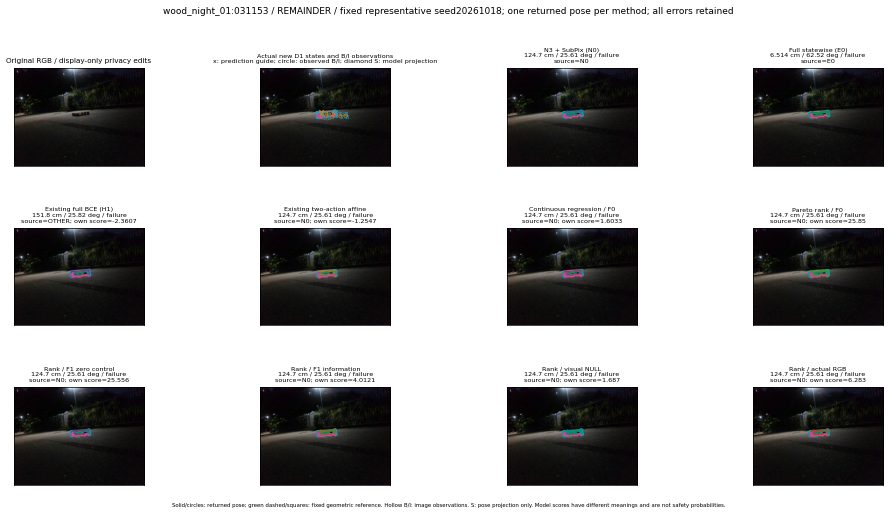

실선은 반환 자세, 초록 점선은 고정 기하 참조입니다. S는 영상 관측이 아닙니다. 점수는 모델별 의미가 다르며 보정된 안전 확률이 아닙니다. 개인정보 처리는 표시 사본에만 적용했습니다.
| 방법·seed | 위치 / 회전 / 공동성공 | 실제 출처 | 선택 후보 | 각 모델 자체 점수 |
|---|---|---|---|---|
| N0 | 124.7 cm / 25.61 deg / failure | N0 | N/A | N/A |
| E0 | 6.514 cm / 62.52 deg / failure | E0 | N/A | N/A |
| E0_REGENERATED | 6.514 cm / 62.52 deg / failure | E0 | E0_REGENERATED | N/A |
| POSEFIX_SUBPIX_PF_ANCHOR | 125.5 cm / 27.51 deg / failure | OTHER | N/A | N/A |
| POSEFIX_SUBPIX_YOLO_ANCHOR | 125.5 cm / 27.51 deg / failure | OTHER | N/A | N/A |
| D1_H1_MLP_s20261018 | 151.8 cm / 25.82 deg / failure | OTHER | WD0/ORIGINAL_WD/sample/2 | -2.360729932785034 |
| D1_H1_MLP_s20261019 | 151.8 cm / 25.82 deg / failure | OTHER | WD0/ORIGINAL_WD/sample/2 | -2.511521577835083 |
| D1_H1_MLP_s20261020 | 151.8 cm / 25.82 deg / failure | OTHER | WD0/ORIGINAL_WD/sample/2 | -2.8268966674804688 |
| D1_H1_PAIR_MLP_s20261018 | 124.7 cm / 25.61 deg / failure | N0 | N0 | -2.605797529220581 |
| D1_H1_PAIR_MLP_s20261019 | 124.7 cm / 25.61 deg / failure | N0 | N0 | -2.679906129837036 |
| D1_H1_PAIR_MLP_s20261020 | 124.7 cm / 25.61 deg / failure | N0 | N0 | -3.6945199966430664 |
| D1_H1_PAIR_ROLE_AFFINE_s20261018 | 124.7 cm / 25.61 deg / failure | N0 | N0 | -1.2547167539596558 |
| D1_H1_PAIR_ROLE_AFFINE_s20261019 | 124.7 cm / 25.61 deg / failure | N0 | N0 | -1.7398953437805176 |
| D1_H1_PAIR_ROLE_AFFINE_s20261020 | 124.7 cm / 25.61 deg / failure | N0 | N0 | -1.503490686416626 |
| R_CONT_F0_s20261018 | 124.7 cm / 25.61 deg / failure | N0 | N0 | 1.603266954421997 |
| R_CONT_F0_s20261019 | 124.7 cm / 25.61 deg / failure | N0 | N0 | 1.5092394351959229 |
| R_CONT_F0_s20261020 | 124.7 cm / 25.61 deg / failure | N0 | N0 | 1.589659333229065 |
| R_ORDER_F0_s20261018 | 124.7 cm / 25.61 deg / failure | N0 | N0 | 25.849977493286133 |
| R_ORDER_F0_s20261019 | 124.7 cm / 25.61 deg / failure | N0 | N0 | 14.375731468200684 |
| R_ORDER_F0_s20261020 | 124.7 cm / 25.61 deg / failure | N0 | N0 | -17.077966690063477 |
| R_ORDER_F1_ZERO_s20261018 | 124.7 cm / 25.61 deg / failure | N0 | N0 | 25.556079864501953 |
| R_ORDER_F1_ZERO_s20261019 | 124.7 cm / 25.61 deg / failure | N0 | N0 | 24.370685577392578 |
| R_ORDER_F1_ZERO_s20261020 | 124.7 cm / 25.61 deg / failure | N0 | N0 | 16.343229293823242 |
| R_ORDER_F1_s20261018 | 124.7 cm / 25.61 deg / failure | N0 | N0 | 4.012069225311279 |
| R_ORDER_F1_s20261019 | 124.7 cm / 25.61 deg / failure | N0 | N0 | 5.895557403564453 |
| R_ORDER_F1_s20261020 | 124.7 cm / 25.61 deg / failure | N0 | N0 | 0.7534281611442566 |
| V_ORDER_NULL_s20261018 | 124.7 cm / 25.61 deg / failure | N0 | N0 | 1.687018871307373 |
| V_ORDER_NULL_s20261019 | 124.7 cm / 25.61 deg / failure | N0 | N0 | 2.257905960083008 |
| V_ORDER_NULL_s20261020 | 124.7 cm / 25.61 deg / failure | N0 | N0 | 6.7066240310668945 |
| V_ORDER_RGB_s20261018 | 124.7 cm / 25.61 deg / failure | N0 | N0 | 6.282984256744385 |
| V_ORDER_RGB_s20261019 | 124.7 cm / 25.61 deg / failure | N0 | N0 | 3.4621264934539795 |
| V_ORDER_RGB_s20261020 | 124.7 cm / 25.61 deg / failure | N0 | N0 | -3.5765151977539062 |